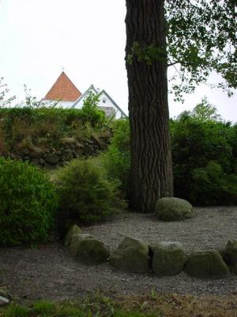
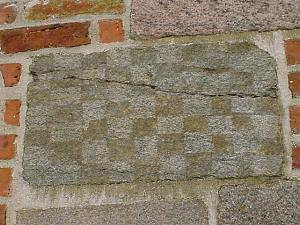
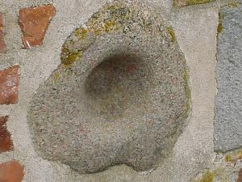
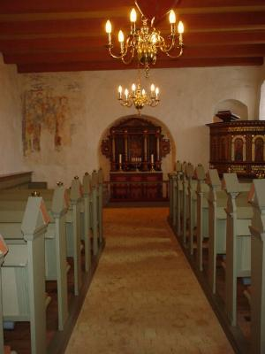
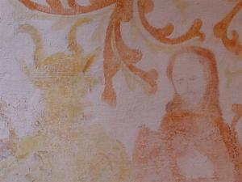
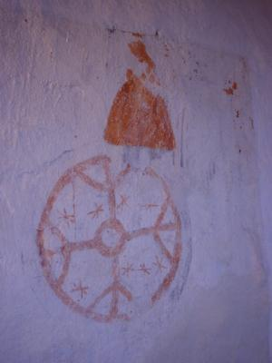
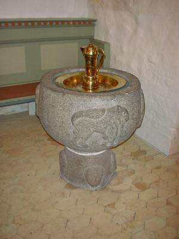
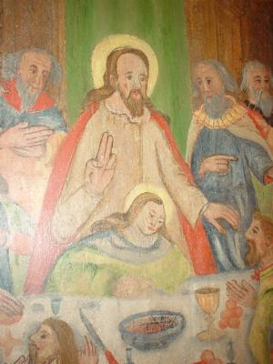
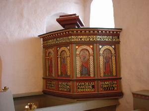

| Vor Frues kirke Lad os begynde uden for. På parkeringspladsen ved det store træ med stenen under. For det fortælles at den sten er skyld i, at vi har en kirke i Ullits, og den netop ligger her med udsigt over Louns bredning og Våsen. I fordums tid var der en herregård i Ullits. Her boede der en adelig frue, som lod Ullits kirke bygge. Tidligere havde folk søgt til Foulum, for at gå i kirke, men da denne frue en søndag kørte til kirke, blev hestene sky. Måske var det Wojens (Odins) jægere, der skræmte hestene, som siges at komme hen gennem luften her i området. Fruens vogn væltede i hvert fald mod en sten - stenen, der nu ligger under træet. Fruen kom slemt til skade. Og hun lovede, at hvis hun kom sig, ville hun bygge kirke i Ullits, og det skulle være der, hvor vognen væltede. Og der står den så nu. |
 |
 |
Skaktavle og uglehul Lige inden vi går indenfor i kirken, går vi om på sydsiden af kirken og nyder den gode udsigt. Ved den tilmurede mandedør, findes der en såkaldt Skaktavle. Disse tavler findes i 46 af landets cirka totusinde kirke. Der findes en anden ved den tilmurede i Foulum kirke. Hvad disse tavler har været brugt til ved man ikke med sikkerhed. De har sikkert ikke været brugt til spil. Nogle mener at stenmesteren har brugt dem som en slags regnebræt, så han kunne holde rede på, hvor mange sten, der var hugget, og hvor mange der manglede. |
| Der går cirka 2000 sten til en almindelig landsbykirke, så det ville selvsagt være ærgerligt, at få lavet for få eller for mange. Men ingen kan regne ud hvordan man brugte denne regnetavle, så måske skal man hælde til den teori, der siger, at alt i kirken har en symbolværdi. Og hvorfor så ikke en skaktavle med hvide og sorte felter. Disse sorte og hvide felter kunne sagtens være et billede på kampen mellem den onde (de sorte/Djævelen) og det gode (de hvide/Kristus). Og da de både i Ullits og Foulum er sat i den tilmurede dør, så kunne det skyldes, at den dør skulle være lukket for mennesker, men så sandelig osse for Djævelen. Hullet i stenen, der også er muret ind i døren bliver kaldt et uglehul og var måske i katolsk tid karret til vievandet. Måske har den endda været brugt til at gnide dynd i, som blev brugt til helbredelse af forskellige sygdomme. |
 |
|
 |
Indenfor Kirkens skib og kor er sandsynligvis bygget lige før år 1200. Hvornår tårnet er kommet til vides ikke, men i 1745 blev det gjort lavere. Det slog nemlig revner, skønt der var sat en skråpille på til at støtte det sydvestre hjørne. På de tre murflader mod syd, vest og nord afdækkedes i 1956 store kalkmalerier. Men fugt i murværket umuliggjorde en restaurering. Men man fik dog så meget afdækket, at man fandt ud af at motiverne var Syndefaldet, Uddrivelsen af Paradis, Brodermordet (Kain og Abel), Kristus og Synderinden, Kristus og den samaritanske kvinde, Nadveren, Fodvaskningen, Korsfæstelsen og Gravlæggelsen. De blev dateret til sengotisk tid. Men dem er der altså intet at se af i dag. |
| Men under en ny restaurering af kirken 1983 fandt man imidlertid de kalkmalerier der nu kan ses i kirken. På triumfvæggen er det Jesu indtog i Jerusalem Palmesøndag. Og i korbuen er det Jesu dåb af Johannes Døberen. Modsat er det Jesu, der fristes af Djævelen i ørkenen lige efter hans dåb. |
 |
 |
På korets nordside er der rester af det såkaldte Tidens hjul, som skildrer tiden som den, der vender op og ned på menneskelivet. Der er antydninger af fire mænd, der viser menneskets aldre, indtil det ligger nederst under hjulet, knust af tiden og der har sikkert stået: "Sådan forgår verdens herlighed!" |
| Døbefonten med de tre løver er et mesterværk i sten. På fontens fod ses fire ansigter - i hver sit verdenshjørne og som modsvarer ansigtet i korbuens loft. Hvem det forstiller ved man ikke, men måske er det Guds åsyn, der løftes imod kirkegængeren? Løverne med de nærmest ildsprudende tunger skal måske ses som den magt der er ved dåbens vand, og som skulle holde onde magter bort fra menneskene og det hellige vand. |  |
 |
Altertavlen blev også restaureret i 1983, og under flere lag maling fandt man et nadverbillede, som afslører at tavlen sikkert er fra renæssancen omkring 1354. Bemærk Jesu hænder. |
| Prædikestolen er noget yngre, da man først begyndte at holde prædikener i de danske kirker efter reformationen. Før den tid foregik hele messen foran alteret. Som der står på prædikestolen så er den fra 1599. Troels Laursen Sognepræst |
 |